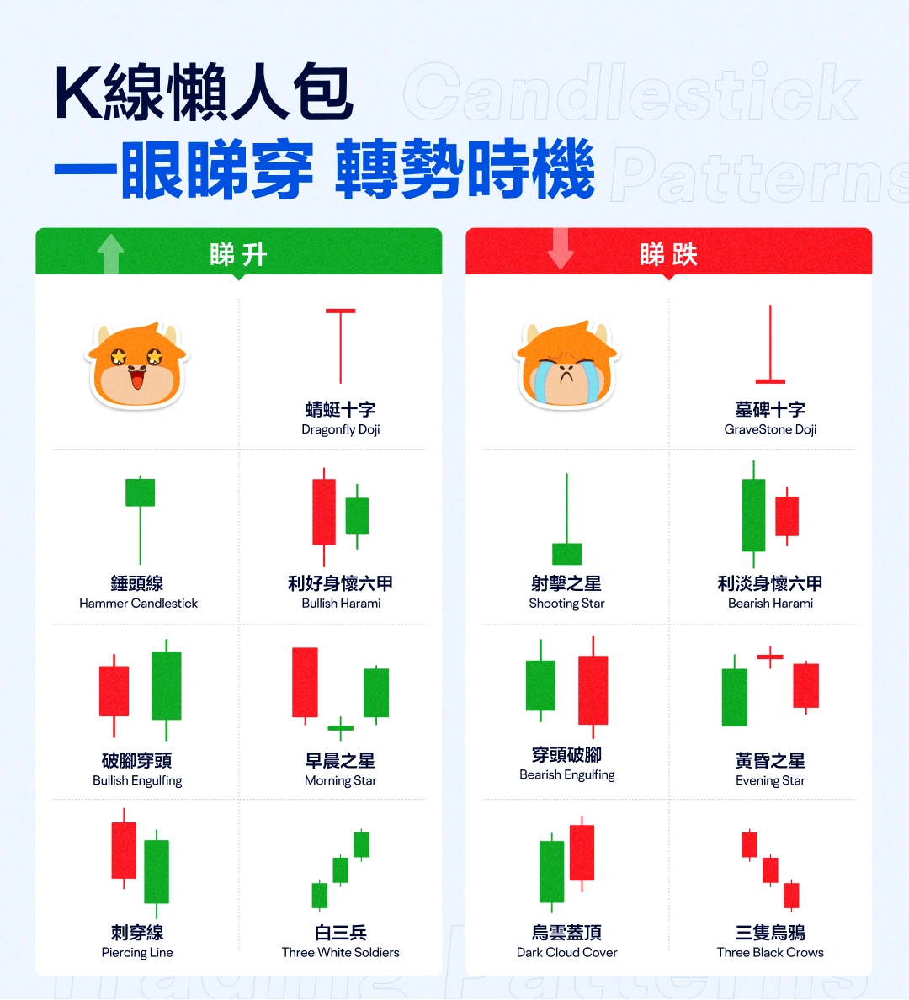

財務數據總覽 (2023-2025)
呈現歌爾股份2023-2025年關鍵財務數據的綜合概覽，包括營收、淨利潤、每股收益等核心指標
核心財務指標對比
| 指標名稱 | 2023年(實際) | 2024年(實際) | 2025年(預測) | 變化趨勢 |
|---|---|---|---|---|
| 營業收入(億元) | 985.74 | 1,009.95 | 1,048.94 | 穩步回升 |
| 淨利潤(億元) | 10.88 | 26.65 | 34.00 | 顯著改善 |
| 每股收益(元) | 0.32 | 0.79 | 1.02 | 持續提升 |
| 毛利率(%) | 12.4 | 14.2 | 15.5 | 邊際改善 |

機構預測重點

潛在風險
- 短期償債壓力（2025年經營性現金流波動）
- AR/VR市場需求不及預期
- 汽車電子業務拓展成本超支